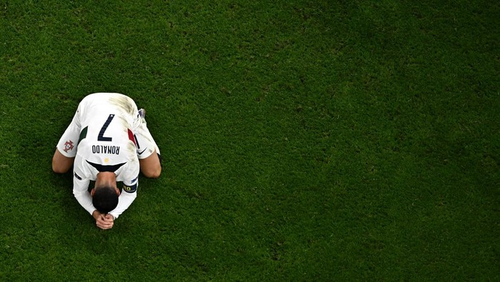

A Argentina conquistou no dia 18 de Dezembro o seu terceiro título mundial ao vencer a França na
final. Esta
vitória faz a Argentina quebrar um jejum de 36 anos sem vencer o mundial. O
último tinha sido em 1986. Anteriormente, os argentinos conquistaram o torneio em 1978, em casa.
Jornada da Argentina no Mundial 2022
A Argentina estava no Grupo C ao lado de Arábia Saudita, México e Polónia. A seleção estreou-se
com uma derrota para a Arábia Saudita, mas recuperou-se e avançou em primeiro lugar do grupo, com
seis pontos conquistados. Venceu nos oitavos de final a Austrália
por 2-1, a Holanda por 4-3 nas grandes penalidades nos quartos de final, a Croácia por 3-0 na
semifinal e a venceu a França na final, assim a seleção argentina acabaria por ganhar a
competição.Messi a segurar no troféu do Mundial de 2022.
A Grande Final
A Argentina sagrou-se tricampeã do Mundo, ao bater a França por 4-2 nas grandes penalidades.
Os argentinos desempatam com os franceses e chegam ao terceiro título, depois de 1972 e 1986.
Num jogo impróprio para cardíacos, as duas seleções empataram 3-3 nos 120 minutos. A Argentina
esteve a vencer por 2-0 até aos 80 minutos, com golos de Messi e Di Maria, Mbappé bisou aos 80 e 82.
No prolongamento, Messi fez o 3-2, Mbappé o hat-trick, de penálti, aos 118 e atirou o jogo para as
grandes penalidades.
Nas grandes penalidades, Dibu Martinez defendeu o remate de Coman e viu Tchouameni atirar ao lado.
Mbappé e Kolo Muani foram os únicos a marcar pela França. Na Argentina, Messi, Dybala, Montiel e
Paredes não falharam. A Argentina vence assim o Mundial2022 por 4-2 nas grandes penalidades, depois
de 3-3 no tempo regulamentar.
Percurso da Seleção Nacional
A Seleção Nacional garantiu a sua participação no Mundial em 29 de março de 2022, no Grupo C da Repescagem das Eliminatórias europeias, após uma vítoria contra a Macedonia do Norte.
Portugal ficou em 1º lugar no Grupo H, com 2 vítorias sobre o Gana (2-1) e Uruguai (2-0) e uma derrota contra a Coreia do Sul (2-1) classificando-se para os Oitavos de Final. Nos Oitavos de Final,
Portugal eliminou a Suíça com uma grande goleada (6-1). Nas Quartas de Final, a Seleção Portuguesa perdeu contra Marrocos e deu adeus ao Mundial do Catar de 2022.
Seleção Nacional
O Fim de Ronaldo?
Após ter deixado o seu clube, Manchester United, depois de ter declarado numa entrevista, que o
seu clube não tinha envoluido desda a sua saída e que não respaitava
o seu treinador porque o mesmo não o respeitava, Cristano Ronaldo iniciaria a sua jornada no Mundial
do Catar, após toda esta polémica, essa que acabou num jogo
angustiante contra Marrocos, nos quartos-de-final. Esta seria a última chance de vencer o Mundial
uma vez que o craque português já possui 39 anos. Para além disso, Lionel Messi,
"rival" de Cristiano, acabaria por vencer o Mundial, o que levaria a muitos a acabar com a discussão
de quem seria o melhor de todos os tempos.

Ronaldo triste após derrota contra Marrocos.
Mundial de 2026
Mesmo sem Messi, a Argentina é um dos grandes favoritos para a próxima edição do Mundial de
Futebol de 2026. Esta será a primeira vez que o evento se realizará em conjunto pelos Estados
Unidos, México e Canadá.
Os jogos serão realizados em várias cidades dos três países, com a final sendo realizada no Estádio
MetLife, em Nova Jersey.
Esta é a primeira vez que três países sediarão o Mundial juntos, e espera-se que isso traga uma nova
dinâmica e emoção ao evento.
Além disso, o Mundial de 2026 será o primeiro a contar com 48 equipas, aumentando assim o número de
países participantes em relação a edições anteriores.Mundial 2026